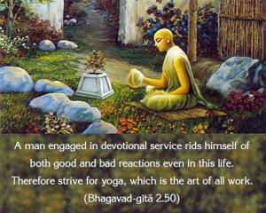
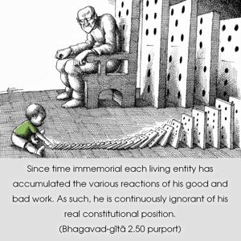

A man engaged in devotional service rids himself of both good and bad reactions even in this life. Therefore strive for yoga, which is the art of all work.


Since time immemorial each living entity has accumulated the various reactions of his good and bad work. As such, he is continuously ignorant of his real constitutional position. One’s ignorance can be removed by the instruction of the Bhagavad-gītā, which teaches one to surrender unto Lord Śrī Kṛṣṇa in all respects and become liberated from the chained victimization of action and reaction, birth after birth. Arjuna is therefore advised to act in Kṛṣṇa consciousness, the purifying process of resultant action.